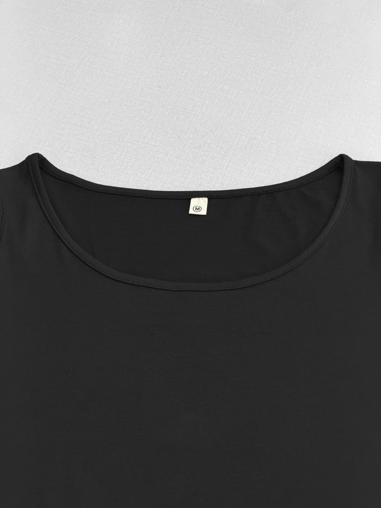
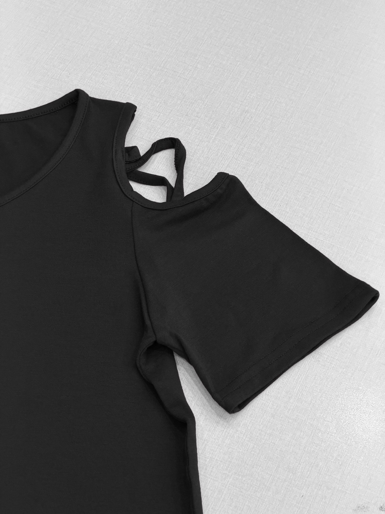
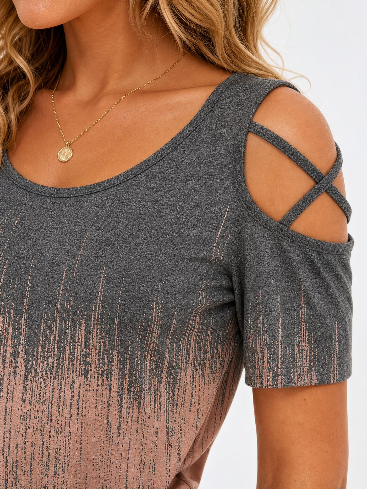

Structure Proof
Cold Shoulder,
Clearly Defined
Open shoulders add shape without hiding the sleeve.
The crossed straps are part of the silhouette—not an afterthought.

SCOOP NECK
CROSS STRAPS
FLOWY SLEEVEDETAIL